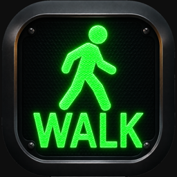

Walker – Explore your city
Clear the fog by exploring. For iPhone.
The map starts covered in fog. Wherever you walk, it lifts, street by street, leaving a picture of everywhere you have been.
Walker works in the background, so the fog clears on your commute, your walks and your travels without opening the app. Stats show how much you explored today, this week and this month, and how much of each country and of over 300 major cities around the world you have uncovered. Your photos can appear on the map where you took them.
Private by design: your tracks and photos never leave your iPhone. No account, no ads, no tracking.
Questions
Why does Walker need location access set to “Always”?
So the fog keeps clearing while Walker is closed. With “While Using the App”, it only clears while the app is open on screen. You can change this in the iOS Settings app under Privacy & Security → Location Services → Walker. Precise Location should be on too; approximate locations are too coarse to clear the right street.
The fog didn’t clear where I went
- Check that location access is “Always” and Precise Location is on. The gear button on the map shows both.
- Walker skips readings that are off by more than about 50 metres, which happens indoors, in tunnels and between tall buildings.
- Very fast travel, over about 200 km/h, isn’t joined up, so a plane journey doesn’t clear a stripe across the country.
- If you force-quit Walker from the app switcher, iOS may not start it again until you move a fair distance.
Does it use a lot of battery?
Walker uses GPS while you are on the move and lets iOS pause it when you stop, then picks up again when you leave. Use is usually modest, though it is higher on days with a lot of travel.
How are the country and city percentages worked out?
Country borders and city boundaries are built into the app, so nothing about where you go is looked up online. The areas are approximate, and where a city’s boundary reaches out to sea, only the land counts. Large cities have large areas, so their percentages grow slowly.
My city isn’t on the list
Walker includes the main tourist cities of each country, and more are added in updates. Your exploring there still counts toward the country. Let us know which city you’d like to see.
How do I delete my data?
Tap the gear button on the map and choose Delete All Data. This removes your tracks, the explored map and your stats from your iPhone. Your photos are not touched. Deleting the app also deletes all its data.
Will my map move to a new iPhone?
Yes, if you move your apps with an iCloud or computer backup: Walker’s data is part of the backup, like other apps’ data.
Contact
Questions, problems or a city you’d like added: __CONTACT_EMAIL__